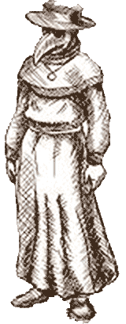

Главная страница
Во времена чумы врачи находились на переднем крае борьбы с одним из самых опасных заболеваний в истории человечества. Ограниченность медицинских знаний того периода делала их попытки лечить больных зачастую неэффективными, но мужество и самоотверженность многих из них остаются примером героизма.

Особенно запомнился образ чумного доктора, облаченного в специфический защитный костюм. Чтобы избежать контакта с зараженной средой, врачи носили длинные мантии и перчатки, а также особую маску с продолговатым клювом, заполненную ароматическими веществами. Предполагалось, что такая маска защищает от ядовитых паров, якобы переносящих болезнь. Реальная же опасность исходила от укусов инфицированных блох, переносимых грызунами, но понимание этого пришло позже.
Опыт борьбы с чумой подтолкнул дальнейшее развитие медицинской науки и гигиены, способствуя созданию новых подходов к лечению и предотвращению эпидемий. Несмотря на трагедию прошлых веков, сегодняшний мир вооружён гораздо большим арсеналом инструментов для противостояния подобным болезням, хотя воспоминания о пандемии продолжают оставаться важным историческим уроком для будущих поколений